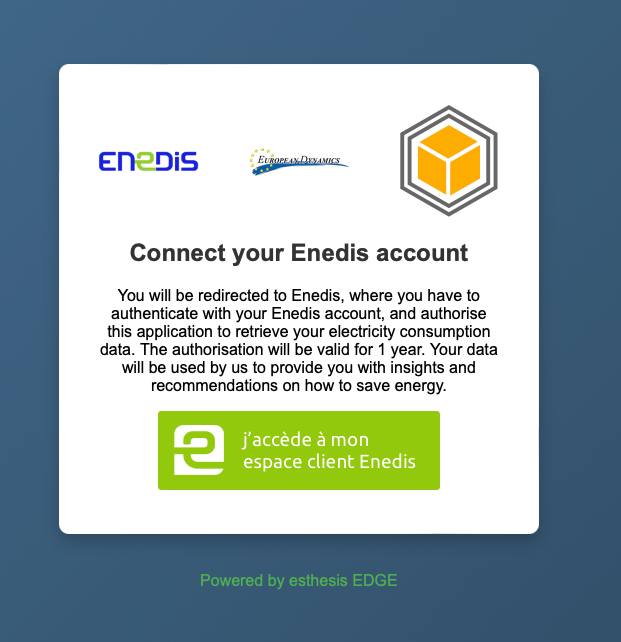

Enedis module
The esthesis EDGE Enedis module allows you to fetch data from the Enedis DataHub API.
Metering data is fetched using the Enedis DataHub "mesure_synchrone_auto v2" API (mesure_synchrone_auto/v2). The data the module supports includes:
Daily consumption (
dc), for consumer PRMs.Daily consumption max power (
dcmp), for consumer PRMs.Consumption load curve (
clc), for consumer PRMs.Daily production (
dp), for producer PRMs.Production load curve (
plc), for producer PRMs.
Each data type can be enabled or disabled individually, see the Enedis module configuration.
Requirements
You need to have an Enedis application account, verified by Enedis, allowed to access the production Enedis DataHub API.
User consent
In order for the esthesis EDGE to be able to fetch data from the Enedis DataHub API, the user must first give their consent following Enedis' procedures. The process starts with the user visiting an application page where information about the application as well as the purpose of the data collection is displayed. If the user agrees, they are redirected to the Enedis login page where they can log in and give their consent. After the user has given their consent, they are redirected back to the application where the consent is stored and the application can start fetching data.
The initial "welcome page" can be created by the Enedis module, featuring three custom images, a customised title, and a customised message; it may look similar to this:

Alternatively, you can set up the Enedis module to redirect the user to a custom URL of your choice, where you can display the information and ask for the user's consent. The URL can be set in the Enedis module configuration.
Device attributes and the DataConnect API migration
When a device is registered, the module collects contract and installation metadata from the four Enedis ITC APIs (situation_contrat_auto, synth_contrat_auto, alimentation_auto, donnees_generales_auto) and shares it with esthesis CORE as device attributes (segment, contract details, subscribed power, meterType — the Enedis meter services level, lastActivationDate, usagePointStatus — the connection state, voltage level, serial number, and installation address). Only the contractual situation (situation_contrat_auto) is required for registration; if any of the other ITC APIs fails, the related attributes are skipped with a warning.
A PRM that both consumes and injects is returned by Enedis with one contract per segment (consumption C5 and production P4). Such a PRM is registered as both a consumer and a producer, so both consumption and production data are fetched; the segment attribute lists both segments (C5/P4), the general contract attributes are taken from the consumption contract, lastActivationDate is the consumption activation date, and an additional generationLastActivationDate attribute holds the production activation date.
Note: the contractStatus and offpeakHours attributes provided by the decommissioned customers_upc API are no longer available. The off-peak hour ranges (plageHeuresCreuses) are exposed by the Enedis situation_comptage_auto API (/comptage_auto/v1), which the module does not call yet.
Testing against the Enedis sandbox
According to Enedis, the metering (mesure_synchrone_auto) APIs cannot be tested in the Enedis sandbox, as it returns placeholder dates such as 20XX-XX-XX instead of real measurements. To verify metering requests you need to use the production Enedis API with a PRM for which the user has given their consent to your application.
Initial data fetch
When a new user is giving its consent to the Enedis module of esthesis EDGE, during the next data fetch cycle, the Enedis module will fetch the data for this user. How far back in time this initial data fetch goes can be configured in the Enedis module configuration, with a default value of 30 days.
Data types and adaptive error handling
As mentioned above, the Enedis module handles five types of data: daily consumption, daily consumption max power, consumption load curve, daily production, and production load curve. However, the Enedis DataHub API does not always return all types of data as, for example, a user might not produce electricity, or might not have provided consent for a specific data type. At the time being, the Enedis DataHub API does not provide an interface for third-parties to discover what kind of data is available. For this reason, the esthesis EDGE Enedis module is operating on a "trial and error" basis, trying to fetch all enabled types of data and graciously handle any errors that might occur (i.e. an error while trying to fetch data type X does not prevent the module from fetching data type Y).
In order for the Enedis module to not keep trying forever to fetch data that is not available, each time an error occurs it is logged. Once the number of errors reaches a certain threshold the Enedis module will stop trying to fetch this specific type of data for this user. The threshold can be configured in the Enedis module configuration, and you should tune it to your needs. Due to this nature of operation you should expect to see some error messages in the logs, until the Enedis module has discovered what kind of data is available for a specific user.
The Enedis module's administration API provides two endpoints allowing to get a list of errors and to reset the error count.
The module also honours the Enedis API rate limits (5 requests per second and 1000 requests per hour). A request waits up to 2 seconds for the per-second limit and, once the hourly quota is used up, until the next hourly refresh. If a permit still cannot be obtained during a data fetch, the module logs a warning and stops the current run without counting it as an error; the remaining data is fetched on the next run. A data fetch run never overlaps the next scheduled one.
Upgrading to 1.0.24
Metering data is now fetched from the Enedis
mesure_synchrone_auto/v2API, replacing the decommissioned v1 metering APIs used by earlier versions.Earlier versions kept failing against the decommissioned v1 APIs, so the error counters of Enedis devices may have reached the errors threshold, disabling data fetching. A database migration resets the error counters of all Enedis devices once, when 1.0.24 starts for the first time.
Consents given through the previous consent flow keep working; existing devices do not need to register again.
If you have overridden the authorization URL (
esthesis.edge.modules.enedis.selfRegistration.authorizationUrl), set it to the Enedis DataConnect v2 default,https://mon-compte-particulier.enedis.fr/dataconnect/v2/oauth2/authorize.
Configuration
For a full list of configuration options for the Enedis module, please refer to the Enedis module configuration.